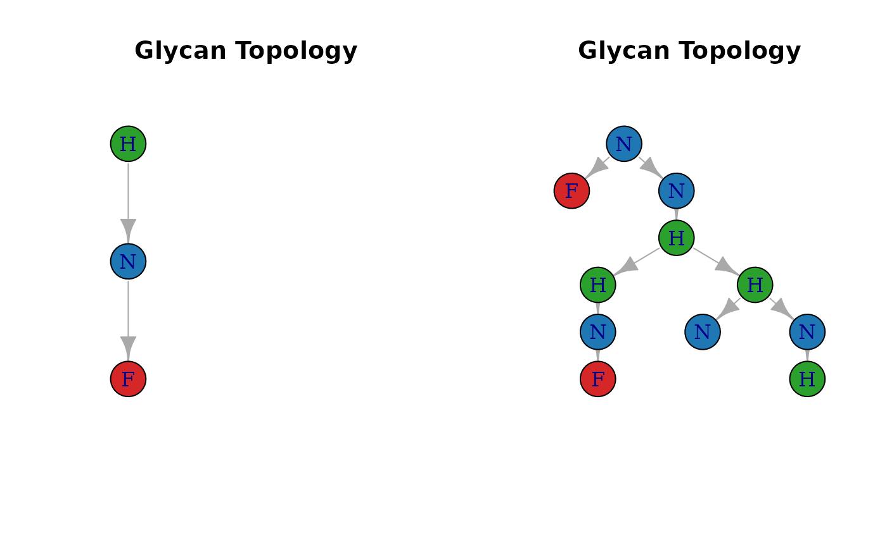

Introduction
This vignette demonstrates how to define user-defined glycan motifs and detect their occurrences within glycan structures using glycoTraitR.
We will: 1. Parse glycan structures into graph trees 2. Visualize full glycans & motifs 3. Perform subgraph isomorphism matching using igraph functions 4. Count occurrences of motif patterns
1. Parse and plot glycan trees
Suppose we have a vector of glycan structures.
# Example: parsed glycan trees from existing GPSM data
path <- system.file("extdata", "pGlyco3_gpsm_toyexample.txt", package = "glycoTraitR")
gpsm_toyexample <- read_pGlyco3_gpsm(path)
data("meta_toyexample")
glycans <- lapply(gpsm_toyexample$GlycanStructure, glycoTraitR:::pGlyco3_to_tree)
# visualize example structures
glycans[[1]] %>% glycoTraitR:::build_glycan_igraph() %>% plot_glycan_tree()
2. A Simple User Motif (Example 1)
Here we define a linear trisaccharide motif:
- H — H — H
- Edges:
"a-b","b-c"
#### Example 1 ####
# (1) Select a glycan from pGlyco3 data
tree_full <- glycans[[24]]
g_full <- glycoTraitR:::build_glycan_igraph(tree_full)
# (2) Define motif manually
motif <- list(
node = c("H", "H", "H"),
edge = c("a-b", "b-c")
)
g_motif <- glycoTraitR:::build_glycan_igraph(motif)
# (3) Perform subgraph matching
n_match <- count_subgraph_isomorphisms(
g_motif, g_full, method = "vf2",
vertex.color1 = factor(V(g_full)$type),
vertex.color2 = factor(V(g_motif)$type)
)
# (4) Visualize
par(mfrow = c(1,2))
plot_glycan_tree(g_motif)
plot_glycan_tree(g_full)
## [1] "2 motif(s) found in the glycan"3. Motif Containing Fucose (Example 2)
This example defines a branched motif containing Fucose:
#### Example 2 ####
# (1) Select a glycan
tree_full <- glycans[[1]]
g_full <- glycoTraitR:::build_glycan_igraph(tree_full)
# (2) Symbolic motif definition
motif <- list(
node = c("H", "N", "F"),
edge = c("a-b", "b-c")
)
g_motif <- glycoTraitR:::build_glycan_igraph(motif)
# (3) Subgraph matching
n_match <- igraph::count_subgraph_isomorphisms(
g_motif, g_full, method = "vf2",
vertex.color1 = factor(V(g_full)$type),
vertex.color2 = factor(V(g_motif)$type)
)
# (4) Visualize motif vs. full glycan
par(mfrow = c(1,2))
plot_glycan_tree(g_motif)
plot_glycan_tree(g_full)
## [1] "1 motif(s) found in the glycan"4. Integrating Motifs with glycoTraitR (for Trait Computation)
You can define multiple motifs at once:
user_motifs <- list(
LinearH3 = list(
node = c("H","H","H"),
edge = c("a-b","b-c")
),
FucBranch = list(
node = c("H","N","F"),
edge = c("a-b","b-c")
)
)Then directly pass them into build_trait_se():
trait_se <- build_trait_se(
gpsm_toyexample,
from = "pGlyco3",
motifs = user_motifs,
level = "protein",
meta = meta_toyexample
)## adding traits to the gpsm matrix## generating protein trait matrices## [1] "GlycanSize" "Hexose" "HexNAc" "Neu5Ac" "Neu5Gc"
## [6] "Fucose" "Antennas" "Bisect" "Complex" "HighMan"
## [11] "Hybrid" "CoreFuc" "AntFuc" "LinearH3" "FucBranch"Your motif counts will automatically appear as additional glycan traits in the trait matrices.
Conclusion
This vignette demonstrates how to:
- Parse glycans into trees
- Visualize glycan topology
- Define custom motif structures
- Apply subgraph isomorphism to detect motif occurrences
- Integrate motifs into the glycan trait workflow
You can now construct your own biologically meaningful glycan motifs and include them directly in glycoTraitR analyses.